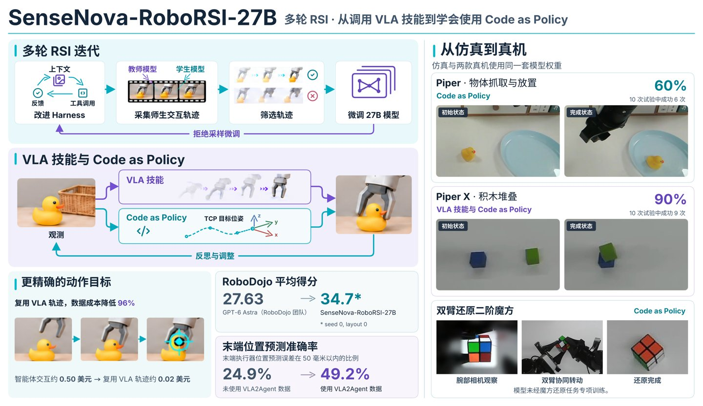

新闻 · 2026-11-26 18:00
商汤开源机器人操作视觉语言模型 SenseNova-RoboRSI-27B 正式版，RoboDojo 评测得分超 GPT-6 Astra
商汤科技于11月26日发布机器人操作视觉语言模型SenseNova-RoboRSI-27B正式版，该模型在RoboDojo评测中得分34.7，较Preview版10.0分提升3.47倍，以27B参数量超越GPT-6 Astra。模型支持自主判断调用VLA或直接控制机械臂，并根据反馈调整策略，采用Apache 2.0开源协议。

来源与核验
单一信源报道，未交叉核实